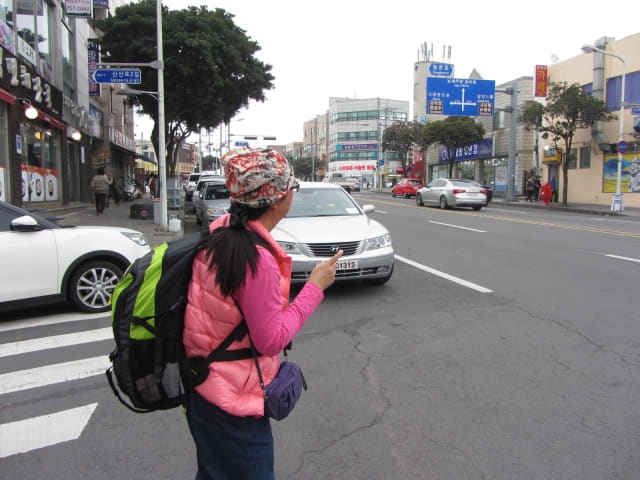
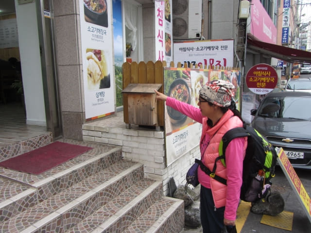
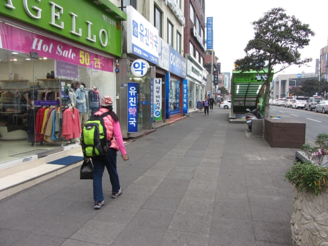
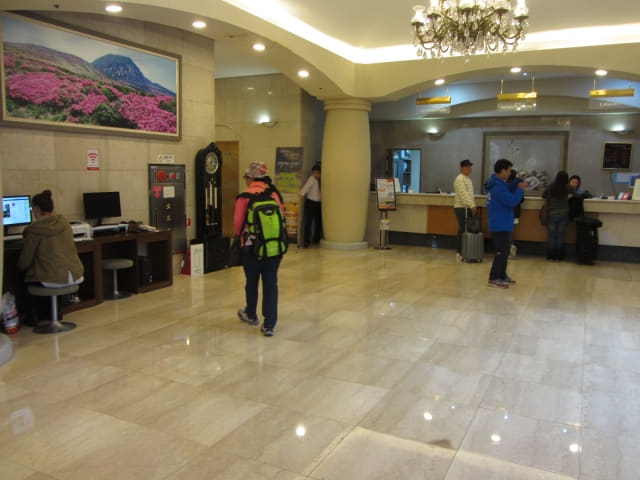

我們約下午三時半在城山「오조해녀의집」巴士站登上了701 號巴士, 沿途交通十分暢通, 於下午四時五十分抵達濟州市的「제일교 동문시장입구」巴士站。我們在濟州市下榻 濟州島羅波羅酒店 호텔로베로 Robero Hotel Jeju)。按地圖所示, 酒店離巴士站並不太遠, 沿大街一直往下走便是, 估計約十五分鐘。

下了車, 因負著重重的背囊, 不敢大意, 先確定了現在的位置才步行往酒店。

離開巴士站, 掉頭走。
經過一間店舖, 看見大大盒的草莓十分新鮮, 而且只售5,000韓元, 便買了一盒。
來到一個十字路口, 在這裡轉左一直往下走便是, 路線十分簡單的, 應該很容易便找到酒店。只是酒店的距離比估計的遠很多, 還以為走過了也不知道, 白白虛驚一場。
濟州東門市場
經過濟州東門市場。看清楚, 是 Gate 12 出入口, 濟州東門市場內肯定四通八達啦!
濟州東門市場 Gate 12 出入口對面有一間餐廳, 名稱是濟州島阿姨家 (제주이모집)。餐廳門前的餐單圖片竟然有我們久違的人參雞湯! 便決定今晚來這裡吃人參雞湯晚餐。

繼續向前走, 經過濟州東門市場 Gate 1 出入口。
濟州東門市場 Gate 3 出入口。
濟州東門市場 Gate 4 出入口。市場真是很大, 單是這條街已經有幾個出口。

濟州東門水產市場
緊接著濟州東門市場是濟州東門水產市場。
繼續向前走。

濟州市中央地下商店街 (제주 중앙지하상가 Jeju Central Underground Mall Street)
經過濟州市中央地下商店街的 4 號 出入口 。
濟州市七星路購物街
濟州市七星路購物街的其中一個入口就在馬路對面, 看來我們住在濟州市最熱鬧的地區。喜歡逛商店購物的朋友, 來到濟州市真是不愁沒地方去。
繼續向前走。來到一個很寬闊的十字路口, 交通十分繁忙, 不容許在這裡橫過馬路, 必須使用中央地下商店街的通道。望望手錶, 已經走了二十多分鐘, 開始有些懷疑, 按理應該已經到了酒店, 莫非酒店是在橫街, 剛才經過了也不知。
接著匆匆掉頭看看, 但沒有酒店的蹤影, 便唯有繼續向前走。從6號口走下中央地下商店街, 再沿樓梯走出6號口, 便來到街道的對面, 接著繼續向前走。
經過濟州市中央地下商店街的 10 號 出入口。

不知道是什麼地方。
濟州島羅波羅酒店 호텔로베로 Robero Hotel Jeju
拐個彎, 高高的濟州島羅波羅酒店就展現眼前! 看來頗豪華呢! 我們會在濟州島羅波羅酒店住宿兩天, 後天便會離開濟州島, 乘渡海往韓國本島南部的木浦市, 展開這旅程的第二部分行程。
一樓大堂氣派不凡。

還有商務中心, 有兩台公用電腦。

很順利辦理了入住手續, 乘電梯往16F房間。
房間一般, 沒有什麼驚喜, 但尚算寬敞舒適。